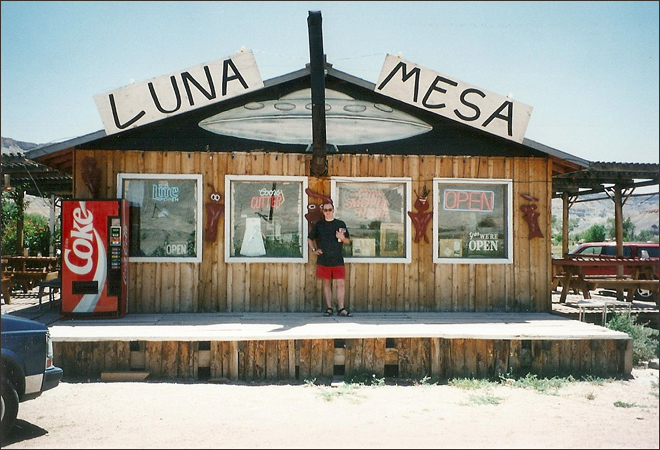
.
The aptly-named 'Luna Mesa' restaurant where we stopped for coffee. Moon Table indeed. The landscape around the restaurant looked a giant cement works - but that was the natural topography.
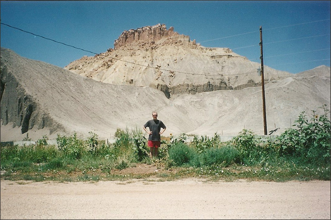
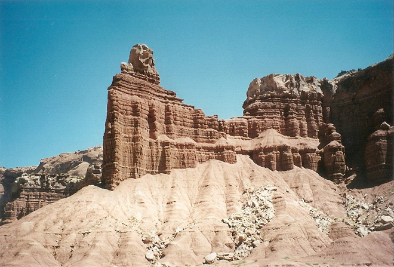
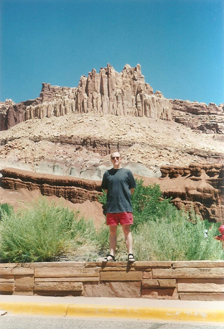
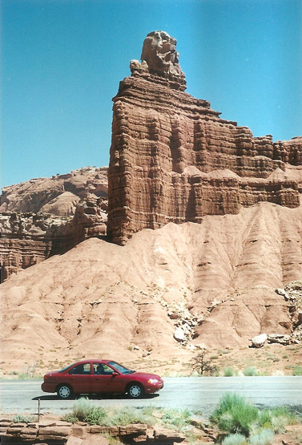
At the junction of White Canyon and Armstrong Canyon, part of the Colorado River drainage and at the very top end of Lake Powell.
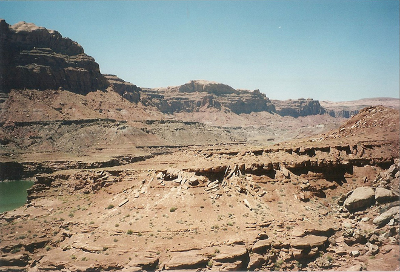
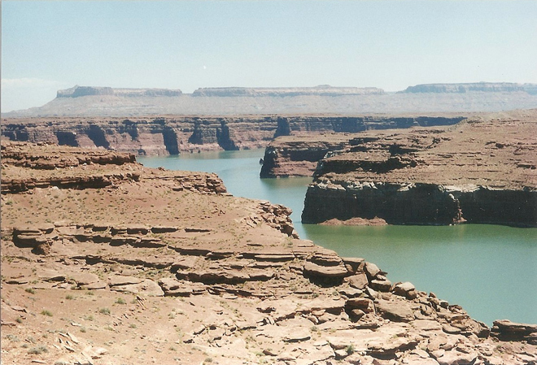
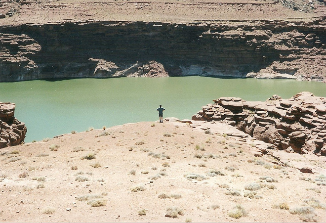
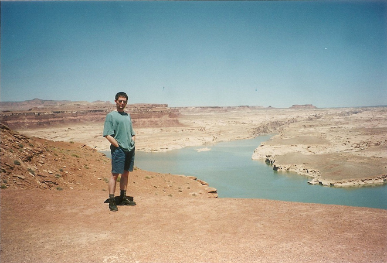
The three bridges in Natural Bridges National Park are named Kachina, Owachomo and Sipapu (the largest), which are all Hopi names. A natural bridge is formed through erosion by water flowing in the stream bed of the canyon. During periods of flash floods, particularly, the stream undercuts the walls of rock that separate the meanders (or "goosenecks") of the stream, until the rock wall within the meander is undercut and the meander is cut off; the new stream bed then flows underneath the bridge. Eventually, as erosion and gravity enlarge the bridge's opening, the bridge collapses under its own weight.
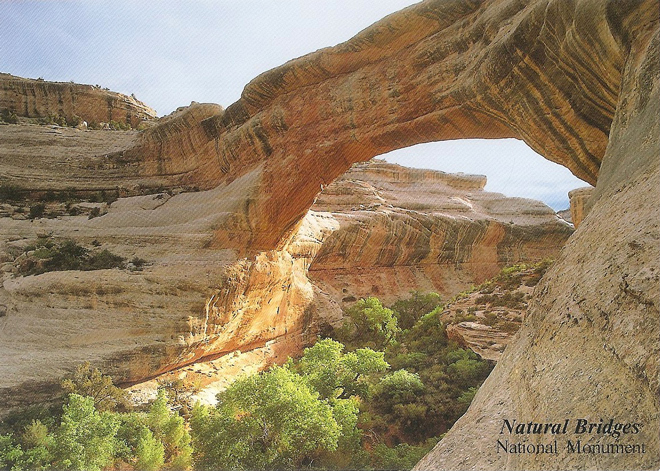
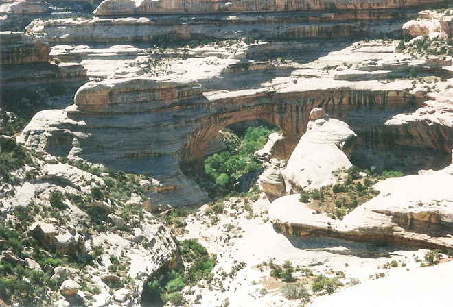
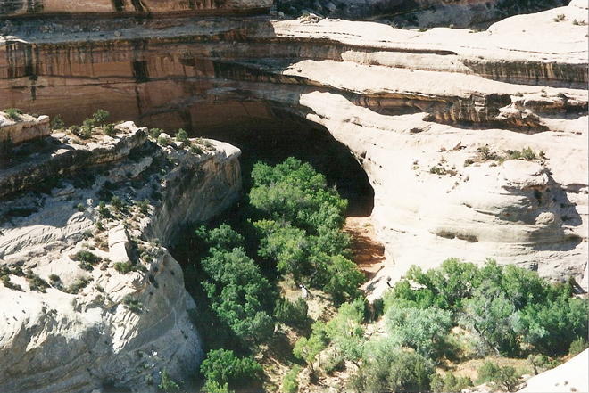
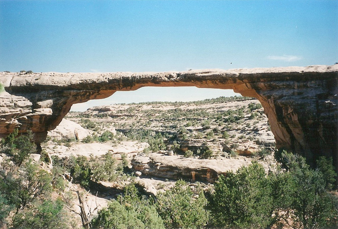
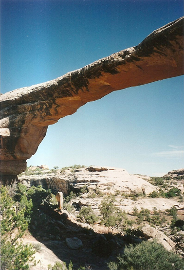
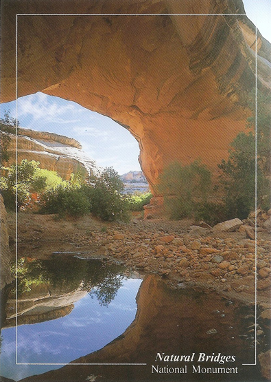
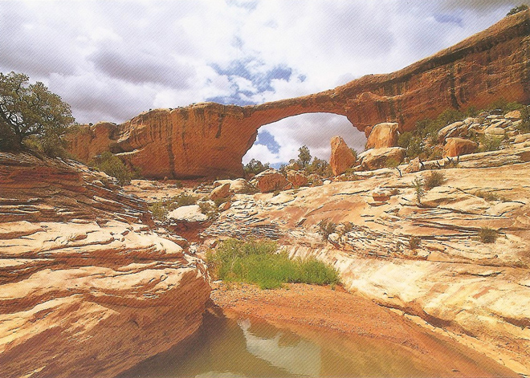